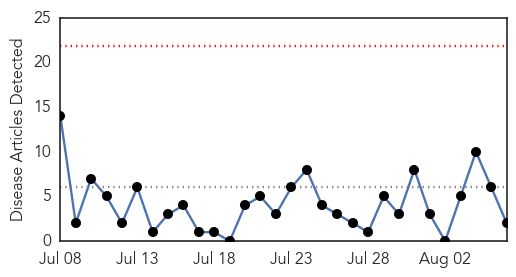
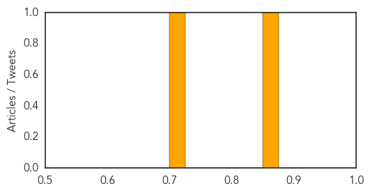
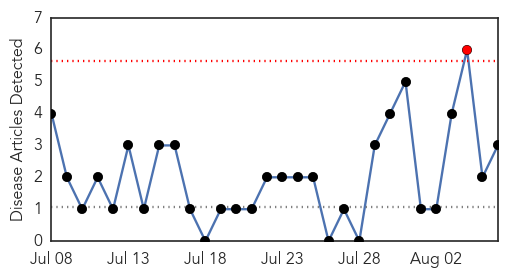
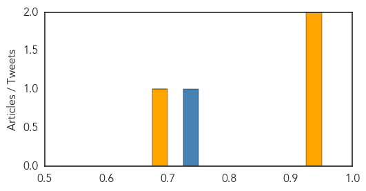

Measles
30-Day Web Trend
0 alerts, 0 warnings

30-Day Twitter Trend
0 alerts, 0 warnings

Article Locations

Article Confidences
Top Articles:
Top Tweets:
-
No tweets found for Aug 06, 2015
Pertussis
30-Day Web Trend
1 alerts, 0 warnings

30-Day Twitter Trend
1 alerts, 0 warnings
Article Locations
Article Confidences
Top Articles:
Top Tweets:
- 0.740
- RT: NEWS SCAN: H5N1 in Africa; Endoscope contamination; Ebola response; Legionella in Bronx; Vax exemptions & pertussis http://t.…